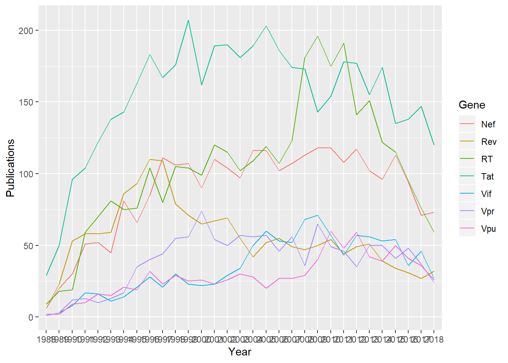
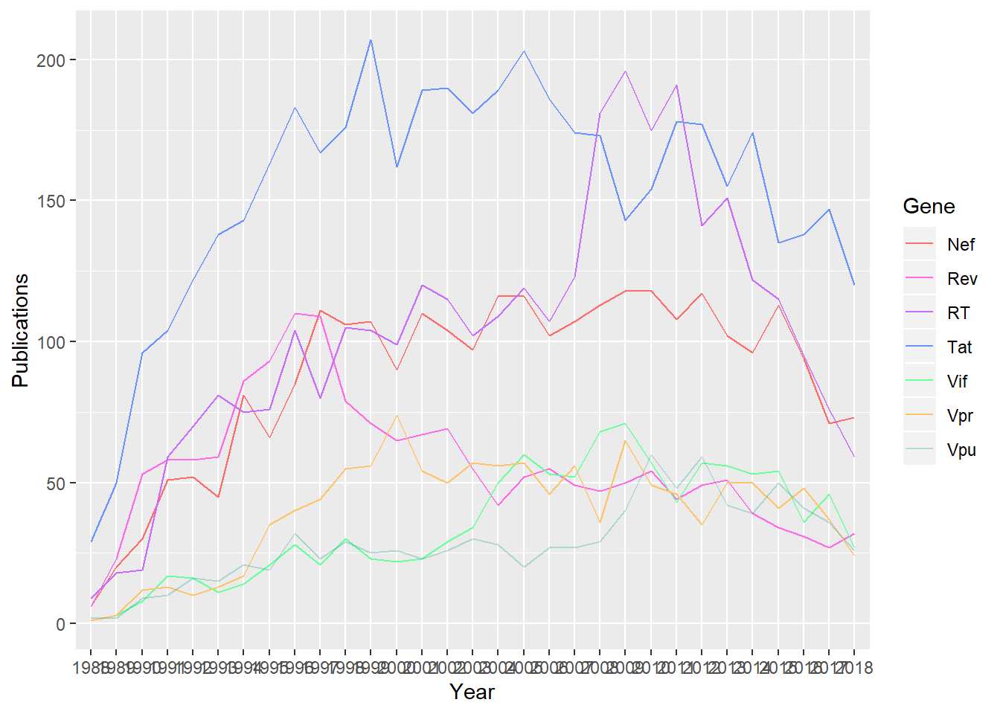
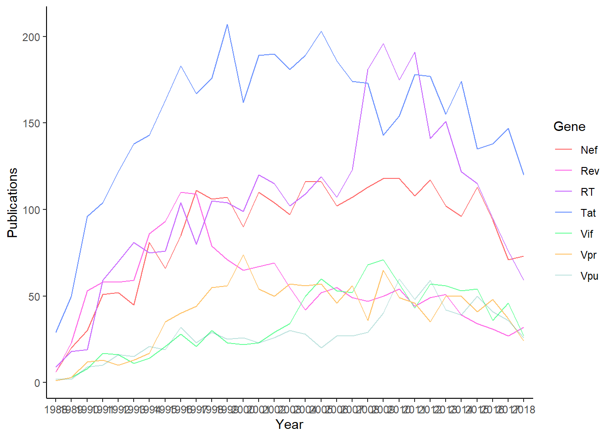
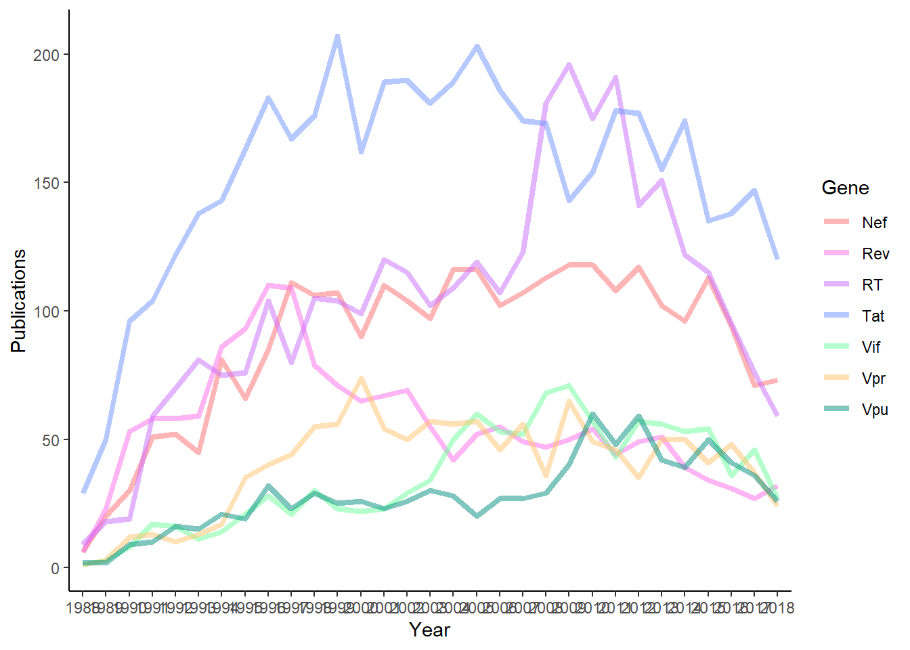
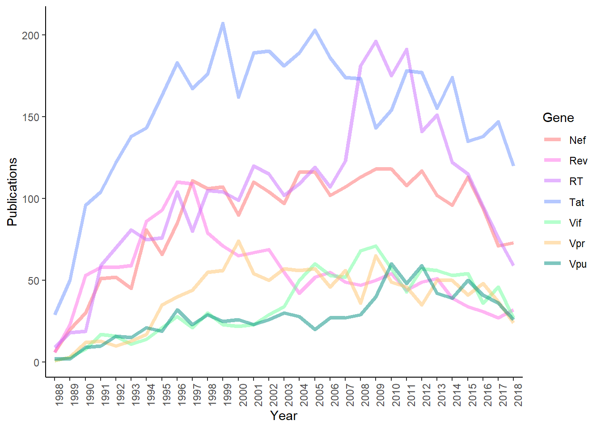
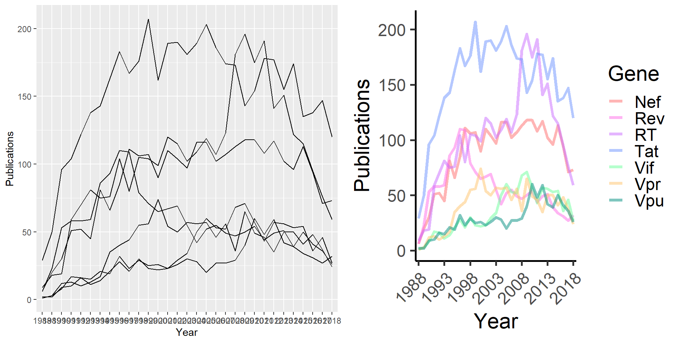

LINE GRAPHS
Data representation is a critical part of being a scientist. So in this section of the course, we’re going to take some data - large and small scale - and determine which plot to use to visualise the data. And then make gorgeous plots! This is our example for today: you are a Biochemist, let’s say. You study a virus, HIV, and want to show the number of papers published on 7 HIV proteins over ~30 years, to see which targets are the least studied. Think about what kind of plot would best show this data.
So, we have 2 categorical variables. If you came up with a line graph, you’d be right! No need to get fancy - a lot of the time in data representation, the simplest answer is the best. After all, you want your reader to look at the graph and know what they’re looking at!
Today’s aim: Make a line graph
This data was obtained from PubMed using the ‘best search’ option and filtering out reviews. I specifically searched for HIV and the gene name. First, navigate to your working directory and import the dataset, which you can find at https://github.com/ctrumanshow/Learn_R_In_An_HouR under the name ‘Timeline2.csv.’
library(tidyverse, warn.conflicts=FALSE) #We will be using the tidyverse!
library(ggplot2) #We will use ggplot2 for plotting!
require(gridExtra) #We use this later to show 2 plots side-by-side
setwd('C:/Users/Greye/Dropbox/DPHIL PHD UPDATED/PROGRAMMING + SCRIPTING/R IN A HR/ggridges') #Change this to indicate where your files are
Data <- read_csv('Timeline2.csv') #Read in your file (read_csv is a wrapper function from readr in tidyverse, one reason we need it!)## Parsed with column specification:
## cols(
## Year = col_double(),
## Publications = col_double(),
## Gene = col_character()
## )view(Data) #Let's look at the data. Try and describe what each of the columns mean You’ll notice that read_csv gives you a message. This tells you that since you did not pass the function what
of data each column is, it makes it’s own assumptions. Side note: if you know the data already, you can specify the type when you read in the data, avoiding corrections later on:
Data <- read_csv('Timeline2.csv', col_types = cols(
Year = col_character(),
Publications = col_integer(),
Gene = col_character()
))
head(Data)## # A tibble: 6 x 3
## Year Publications Gene
## <chr> <int> <chr>
## 1 2019 19 Rev
## 2 2018 32 Rev
## 3 2017 27 Rev
## 4 2016 31 Rev
## 5 2015 34 Rev
## 6 2014 39 RevCompare the types (shown in italics under column names) before and after!
But wait.. it’s 2019 (when I wrote this!) - so we can’t trust the number of publications, since more are likely to come out. Let’s remove these entries. To do this, we have to tell R 2 things:
1) Find all rows with ‘2019’ in the year column
2) Remove these rows We can do this in 1 step using dplyr, from tidyverse. Simply us the filter function to select your dataset (Data), and filter by any Year whose value does not equate (!=) to 2019, and re-assign this to the Data variable.
Data <- filter(Data, Year != "2019")Now, let’s plot! We will use pipe function ‘%>%’ - this simply tells R to pass what is before the pipe to the commands that come after. We call ggplot first, to show we are plotting. Aes, or aesthetic is used to define what values we will be plotting. On our X axis, we will have the independent variable: year. On our Y, we will have our dependent variable: number of publications. We will also plot these variables for 7 differet genes, and will call the info from each gene a group. So we call our groups by Gene. We’ve told ggplot what we want to plot, now let’s tellit what type of plotting to do - this is geom_linefor a line graph. Let’s see how it looks!
Plot_First <- Data %>% ggplot(aes(x = Year, y=Publications, group=Gene)) + geom_line()And we’ve made a graph! But if you showed this to a stranger, they wouldn’t know what they were looking at! First of all, let’s add a legend and colour the genes to show which is which.
Data %>% ggplot(aes(x = Year, y=Publications, group=Gene, color=Gene)) + geom_line()
There! Looks a lot nicer. But whatsay we pick some nice custom colours and make it a little prettier! First, let’s pick 7 colours that are clearly distinguished and nice to look at, and put them together - replace my colours with ones you’ve picked yourself! You can use built-in colours, like ‘red’ or ‘blue.’ To really personalise, I recommend https://www.rapidtables.com/web/color/RGB_Color.html. We can add scale_color_manual on the end to tell the functions that we want to use our collection of colours.
Line_Colours <- c('#FF6B6B',"#FF6BE7", "#C96BFF", "#6B92FF", "#6BFF9C", "#FFC46B", "#008E8040")
Data %>% ggplot(aes(x = Year, y=Publications, group=Gene, color=Gene)) + geom_line() + scale_colour_manual(values = Line_Colours) 
It’s still not beautiful… let’s change the theme. Themes are parameters you can add on which change the global graph look - good ggplot themes and you’ll get a list! Try replacing theme_classic() with theme_void() and see what happens! Choose your favourite.
Data %>% ggplot(aes(x = Year, y=Publications, group=Gene, color=Gene)) + geom_line() + scale_colour_manual(values = Line_Colours) +theme_classic()
But I think we should make the lines thicker so they are easier to see. We can do this by going straight to what makes the lines, geom_line, and adding a size parameter. Change ‘1.5’ and see how the lines look. We can also add options like alpha, which changes how transparent lines are, and choose the linetype. Change this to ‘dashed’ and see how it looks!
Data %>% ggplot(aes(x = Year, y=Publications, group=Gene, color=Gene)) + geom_line(size=1.5, alpha=0.5, linetype="solid") + scale_colour_manual(values = Line_Colours) +theme_classic() 
But our x-axis is horrible! Let’s rotate the labels. To do this, we add a new theme - axis.text.x - and change the horizontal justification to make things look neater
Data %>% ggplot(aes(x = Year, y=Publications, group=Gene, color=Gene)) + geom_line(size=1.5, alpha=0.5, linetype="solid") + scale_colour_manual(values = Line_Colours) +theme_classic() + theme(axis.text.x = element_text(angle = 90, hjust = 1)) I think the x-axis is still a little crowded, let’s only label every 5 years and rotate the labels to make them easier to read. I’ll also add a base_size to the theme to everything is a little bigger
Plot_Final <- Data %>% ggplot(aes(x = Year, y=Publications, group=Gene, color=Gene)) + geom_line(size=1.5, alpha=0.5, linetype="solid") + scale_colour_manual(values = Line_Colours) +theme_classic(base_size=22) + theme(axis.text.x = element_text(angle = 45, hjust = 1)) +
scale_x_discrete(breaks=seq(1988, 2018, 5))And you can go on and on to change things to suit your tastes! It’s all a google away. Let’s compare the before and after images.
grid.arrange(Plot_First, Plot_Final, ncol=2)